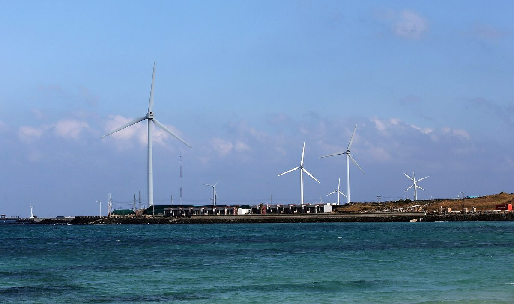

제주도, 2035년까지 해상풍력 5GW 개발하고 바람연금·햇빛연금 확대 구상

위성곤 지사 취임 100일 인터뷰서 추자해상풍력 2GW 포함 개발, 재생에너지 기반 그린 AI 데이터센터 조성 제시…연금 확대 규모·재원은 밝히지 않아
위성곤 제주특별자치도지사가 2035년까지 추자해상풍력 2GW를 포함해 모두 5GW 규모의 해상풍력을 개발하고, 발전 이익을 도민에게 돌려주는 바람연금과 햇빛연금을 확대하겠다는 구상을 밝혔다. 위 지사는 취임 100일(21일)을 맞은 언론 인터뷰에서 재생에너지를 소형위성·청정바이오와 함께 제주의 미래 성장 산업으로 꼽고, 재생에너지를 바탕으로 한 그린 AI 데이터센터를 조성하겠다고 말했다. 그는 제주의 재생에너지 발전 비중이 20%를 넘고 전국에서 처음으로 분산에너지 특화지역으로 지정된 점을 제주의 강점으로 들었다. 다만 바람연금과 햇빛연금을 어느 규모로, 어떤 재원과 대상으로 넓힐지는 이번 인터뷰에서 구체적으로 제시되지 않았다.
시민에너지 관점
덴마크는 2009년부터 2020년까지 새 풍력발전 사업이 지분의 20% 이상을 인근 주민에게 내놓도록 의무화해, 주민이 이익을 나눠 받는 데 그치지 않고 발전소의 주인이 될 수 있는 길을 제도로 열었다. 5GW 해상풍력은 사업비가 워낙 커 도민이 출자로 참여하기 어렵다는 반론이 나올 수 있지만, 사업 전체가 아니라 일정 지분을 소액 출자 몫으로 열어 두면 도민 누구나 주인으로 들어설 수 있다. 연금은 사업자가 정한 만큼 받는 소득이지만, 지분은 발전소가 돌아가는 동안 도민이 지키는 자산이라는 점에서 다르다. 바람연금·햇빛연금 확대 계획을 구체화할 때 제주도는 규모와 재원뿐 아니라 도민이 직접 지분을 갖는 출자 몫부터 해상풍력 공모 조건에 넣어야 한다.
출처: 중앙일보 2026-10-26 최충일 원문 보기
済州道、2035年までに洋上風力5GWを開発し風年金・太陽光年金を拡大する構想
ウィ・ソンゴン知事、就任100日のインタビューで楸子洋上風力2GWを含む開発と再生可能エネルギーによるグリーンAIデータセンター構想を提示…年金拡大の規模・財源は示さず
ウィ・ソンゴン済州特別自治道知事は、2035年までに楸子洋上風力2GWを含む計5GW規模の洋上風力を開発し、発電による利益を道民に還元する風年金と太陽光年金を拡大する構想を明らかにした。ウィ知事は就任100日（21日）を迎えたメディアのインタビューで、再生可能エネルギーを小型衛星・クリーンバイオとともに済州の未来の成長産業に挙げ、再生可能エネルギーを基盤とするグリーンAIデータセンターを整備すると述べた。知事は、済州の再生可能エネルギー発電比率が20%を超え、全国で初めて分散エネルギー特化地域に指定されたことを済州の強みとして挙げた。ただし、風年金と太陽光年金をどの規模で、どのような財源と対象に広げるかは、今回のインタビューでは具体的に示されなかった。
市民エネルギーの視点
デンマークは2009年から2020年まで、新たな風力発電事業に持分の20%以上を近隣住民に提供するよう義務づけ、住民が利益の分配を受けるだけでなく発電所の所有者になれる道を制度として開いた。5GWの洋上風力は事業費があまりに大きく、道民が出資で参加するのは難しいとの反論も出かねないが、事業全体ではなく一定の持分を少額出資枠として開いておけば、道民の誰もが所有者として加われる。年金は事業者が決めた分だけ受け取る所得だが、持分は発電所が動いている間、道民が守り続ける資産だという点で異なる。風年金・太陽光年金の拡大計画を具体化する際、済州道は規模や財源だけでなく、道民が直接持分を持つ出資枠をまず洋上風力の公募条件に盛り込むべきだ。
出典: 中央日報（JoongAng Ilbo） 2026-10-26 チェ・チュンイル 原文を読む
济州道提出到2035年开发5GW海上风电并扩大风力年金与阳光年金的构想
知事Wi Sung-gon在就任100天采访中提出包括楸子海上风电2GW在内的开发计划及基于可再生能源的绿色AI数据中心…未说明年金扩大的规模与资金来源
济州特别自治道知事Wi Sung-gon表示，计划到2035年开发包括楸子海上风电2GW在内、总规模5GW的海上风电，并扩大把发电收益返还给道民的风力年金和阳光年金。Wi知事在就任100天（21日）之际接受媒体采访时，把可再生能源与小型卫星、清洁生物产业一起列为济州未来的增长产业，并表示将建设以可再生能源为基础的绿色AI数据中心。他把济州可再生能源发电比重超过20%、在全国首个被指定为分布式能源特化地区列为济州的优势。不过，风力年金和阳光年金将以何种规模、何种资金来源和对象扩大，此次采访中并未具体说明。
市民能源视角
丹麦在2009年至2020年间规定，新的风电项目必须向附近居民出让20%以上的股份，从制度上为居民打开了不只分享收益、更能成为电站主人的道路。可能有人反驳说，5GW海上风电投资规模过大，道民难以通过出资参与，但只要不是针对整个项目、而是拿出一定股份作为小额出资额度，任何道民都可以作为主人加入。年金是按开发商决定的数额领取的收入，而股份是电站运转期间道民一直持有的资产，两者性质不同。在具体制定风力年金和阳光年金扩大计划时，济州道不仅要明确规模和资金来源，更应首先把道民直接持股的出资额度写进海上风电招标条件。
来源: JoongAng Ilbo 2026-10-26 Choi Choong-il 查看原文
Jeju plans 5GW of offshore wind by 2035 and wider wind and sunlight pensions
Governor Wi Sung-gon, in an interview marking 100 days in office, set out development including the 2GW Chuja offshore wind project and a green AI data centre powered by renewables, without giving the scale or funding of the pension expansion
Jeju Special Self-Governing Province Governor Wi Sung-gon has set out a plan to develop 5GW of offshore wind by 2035, including the 2GW Chuja offshore wind project, and to expand the wind pension and sunlight pension that return generation profits to residents. In a media interview marking his 100th day in office on the 21st, Wi named renewable energy, alongside small satellites and clean bio industries, as Jeju's future growth sectors and said the province would build a green AI data centre based on renewable power. He cited as Jeju's strengths a renewable share of more than 20% of power generation and its designation as Korea's first specialised zone for distributed energy. The interview did not, however, specify how large the wind and sunlight pensions would become, how they would be funded or who would be covered.
Citizen Energy View
From 2009 to 2020 Denmark required new wind projects to offer at least 20% of their shares to nearby residents, opening a legal path for residents not just to share in profits but to become owners of the turbines. Some may argue that 5GW of offshore wind is far too costly for residents to invest in, but setting aside a fixed share of each project for small investments, rather than the whole project, would let any resident come in as an owner. A pension is income paid in whatever amount the developer decides, whereas a share is an asset residents hold for as long as the plant runs. As Jeju fleshes out its plan to expand the wind and sunlight pensions, it should write a resident ownership share into the offshore wind tender conditions, not just set the scale and funding.
Source: JoongAng Ilbo 2026-10-26 Choi Choong-il Read the original